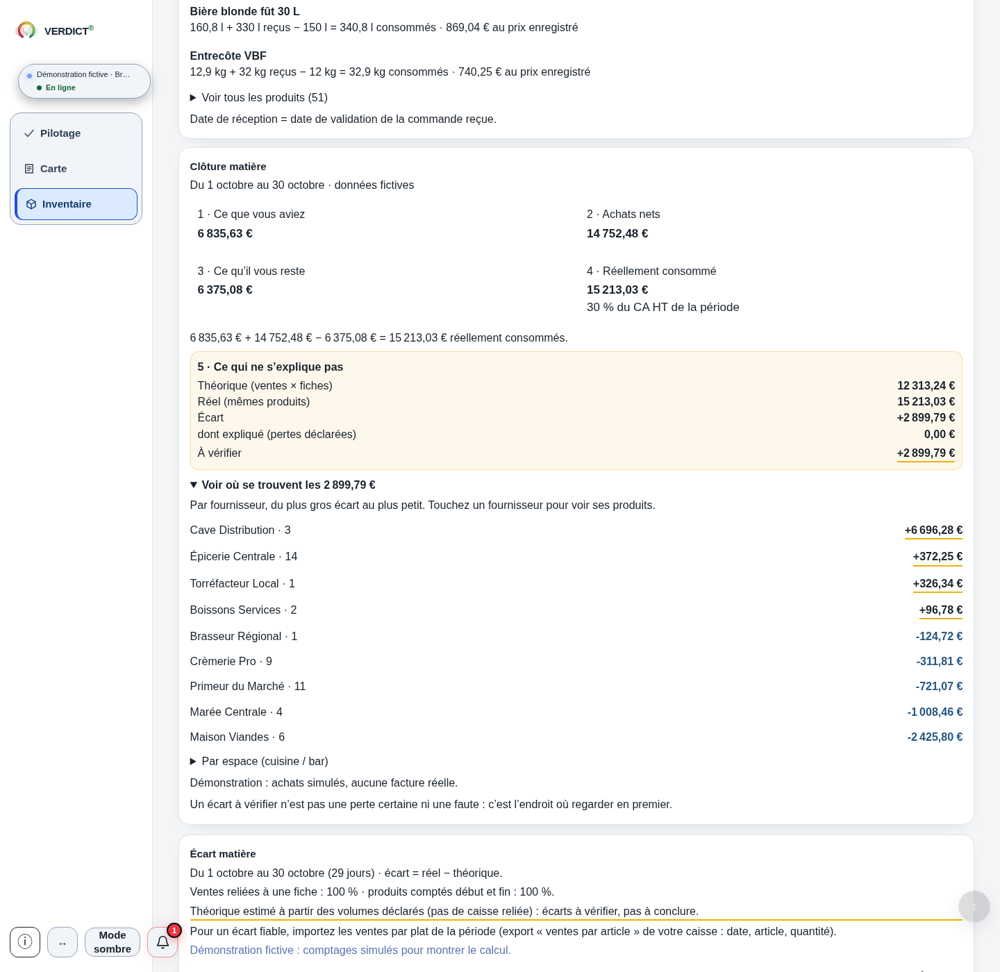
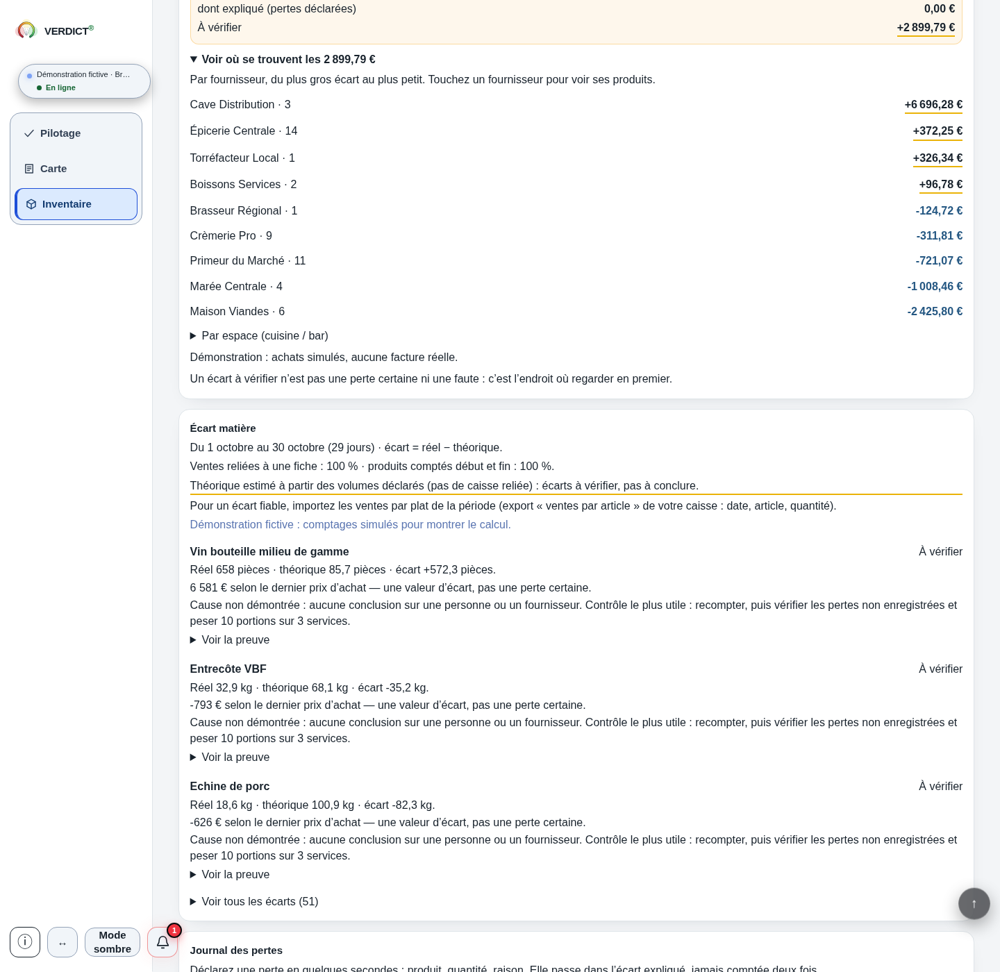

Inventaire moins théorique
Écart entre les montants HT
En attente des deux montants matière valides.
Le montant est signé et indépendant des ventes. Il ne désigne ni une perte physique, ni une cause, ni un gain récupérable.
Deux montants et leurs sources
Votre lecture d’inventaire et vos recettes donnent deux montants matière. Vérifiez d’abord leurs produits, dates, prix et quantités de référence. Leur différence ouvre une vérification ; elle ne désigne pas à elle seule une perte, une personne ou une économie récupérable.
Deux chemins, une frontière à vérifier
La matière d’inventaire s’établit à partir de stocks valorisés et de mouvements documentés. La matière théorique dépend des recettes, prix, rendements et quantités de référence retenus.
Leur simple présence ne les rend pas comparables. Conservez pour chaque montant sa source, sa période, ses catégories et les données manquantes. Des volumes déclarés ou extrapolés ne deviennent pas des ventes observées.
Avant de soustraire
Vérifiez période et coupure, produits, catégories, unités, valorisation, traitement des mouvements et version des recettes. Les ventes doivent couvrir les mêmes frontières.
Cuisine, boissons, offerts et repas internes gardent leur traitement explicite. Un produit non lié ou sans prix n’est pas zéro. Ne neutralisez pas une catégorie en supposant ses ratios égaux sans l’avoir établie.
Les corrections et différences de périmètre restent documentées avec leurs pièces. Un montant identifié ne prouve pas à lui seul qu’il explique l’écart ou qu’il ne recouvre pas un autre élément.
Deux lectures arithmétiques
Écart entre les montants HT = matière d’inventaire établie − matière théorique établie.
Écart en points sur les ventes HT = écart ÷ ventes HT correspondantes × 100. Les ventes doivent être strictement positives.
Ces points expriment la différence entre deux ratios sur la même base de ventes. Ils ne mesurent pas une variation relative du théorique ni une quantité de matière physiquement perdue.
Le signe n’est pas une cause
Un écart positif indique que la matière d’inventaire renseignée dépasse la matière théorique. Un écart négatif indique l’inverse ; son signe reste visible. Dans les deux cas, rapprochez les mêmes bases et pièces.
Une égalité exacte indique seulement que les deux montants saisis sont égaux. Elle ne certifie ni leur couverture, ni la qualité des données, ni l’absence de perte. Un nombre de points arrondi à zéro n’est pas non plus une preuve d’égalité exacte.
L’intérêt du rapprochement
Les achats du modèle économique, la matière théorique de la Carte et une clôture issue d’inventaires répondent à des définitions différentes. Une lecture isolée ne certifie pas le périmètre des autres.
Le rapprochement aide à formuler une question sur les références, mouvements et hypothèses retenus. Il ne localise pas automatiquement un ingrédient ou une personne et ne transforme pas tout l’écart en économie réalisable.
Ce qui reste ouvert
Une différence agrégée ne donne pas la réponse à toutes les questions de terrain. Retrouvez le produit, la date, l’unité, le prix ou la quantité qui permet de poursuivre la vérification.
Gardez les inconnus visibles et la question à traiter. La pièce manquante reste à retrouver avant d’attribuer une cause ou de chiffrer un effet.
Votre comparaison, sans données fournies
Les deux matières sont déjà établies. Cet outil calcule leur différence ; il ne reconstruit ni les inventaires ni les recettes.
Même période et coupure, produits et catégories, bases HT et valorisation compatibles, mouvements et recettes documentés. Le calcul suppose deux montants déjà établis sur des bases comparables. Il ne vérifie pas leurs pièces, leur couverture ni les données absentes.
Trois montants positifs ou nuls, en euros HT, jusqu’à quinze chiffres avant le séparateur et deux décimales. Virgule ou point et espaces de milliers correctement groupés acceptés ; aucun signe moins, même sur zéro, ni signe plus ou exposant. Un montant matière négatif demande un rapprochement préalable, sans valeur absolue ni zéro de substitution. Les résultats signés ne sont pas plafonnés à la borne d’une saisie.
Renseignez les deux matières pour leur écart, puis les ventes strictement positives pour les points. Une valeur inconnue ne devient pas zéro.
Inventaire moins théorique
En attente des deux montants matière valides.
Le montant est signé et indépendant des ventes. Il ne désigne ni une perte physique, ni une cause, ni un gain récupérable.
Sur la même base de ventes
Les points demandent aussi des ventes strictement positives.
Ce sont des points entre deux ratios sur les mêmes ventes, pas une variation relative du théorique. Les signes et amplitudes au-delà de cent points sont conservés.
Écart calculé au centime exact. Les points utilisent la fraction exacte puis s’affichent au centième, avec les moitiés arrondies à l’écart de zéro. Des points affichés à zéro ne prouvent pas un écart exact nul.
Quand une donnée change
Ventes absentes, invalides ou nulles : l’écart en euros reste visible si les deux matières sont valides. Les points deviennent indisponibles, avec leur raison précise.
Matière absente ou invalide : l’écart et les points deviennent indisponibles. Les anciennes valeurs ne sont pas conservées. Zéro connu et donnée absente gardent des états différents.
Les deux montants matière sont non négatifs dans ce domaine. Leur différence peut être négative sans être une erreur de calcul.
Avant la comparaison
Si votre lecture d’inventaire n’est pas établie, revenez aux stocks valorisés et aux mouvements. Le calcul préalable simplifié garde son domaine strict ; il ne traite pas tous les mouvements réels.
Relire le calcul préalable et son périmètreAvant d’attribuer une cause
La lecture d'inventaire s'appuie sur des stocks valorisés et des mouvements documentés. La matière théorique dépend des recettes, prix, rendements et quantités de référence retenus. Conservez pour chaque montant sa période, ses catégories, sa source et les données manquantes. Des quantités déclarées ou extrapolées ne deviennent pas des ventes observées.
Rapprochez période et coupure, produits, catégories, unités, valorisation, mouvements et version des recettes. Les ventes doivent couvrir le même périmètre. Cuisine, boissons, offerts et repas internes gardent leur traitement explicite ; un produit non lié ou sans prix n'est pas remplacé par zéro. L'outil ne certifie pas cette comparabilité.
Oui. Un écart négatif signifie que la matière théorique renseignée dépasse la matière d'inventaire ; le signe n'est ni masqué ni ramené à zéro. Un écart exactement nul indique seulement l'égalité des deux montants saisis. Ni le signe ni l'égalité ne prouvent la qualité des pièces, leur couverture ou l'absence de perte.
Les points rapportent la différence aux mêmes ventes HT strictement positives. Ils comparent deux ratios sur cette base et ne donnent pas une variation relative du théorique. Si les ventes sont absentes, invalides ou nulles, l'écart en euros reste calculable lorsque les deux matières sont valides, mais les points sont indisponibles. Des points arrondis à zéro ne prouvent pas une égalité exacte.
Non. Prix, dates, unités, mouvements, recettes ou couverture peuvent changer le rapprochement sans perte physique équivalente. L'écart agrégé ne désigne pas automatiquement une cause ou une personne. Documentez chaque élément avec sa pièce, son montant et son signe, sa période et son périmètre, en vérifiant les chevauchements. Cette documentation ne démontre pas à elle seule une explication ou une économie réalisable.
Ce que la référence examinée montre
La référence figée examinée de Verdict distingue achats du modèle, matière théorique des recettes et clôture dans le périmètre des produits exploitables. Comptages, réceptions, prix enregistrés et couverture des données conditionnent cette dernière lecture.
Les produits non calculables, les données partielles et les prix absents restent des limites à lire. La présence de ces deux voies ne certifie pas que toutes leurs frontières sont déjà comparables. Un rapprochement ne démontre ni perte physique, ni économie récupérée, ni exhaustivité.
Dans cette démonstration fictive, Verdict met côte à côte les stocks, les achats nets et une lecture de matière théorique. Les vues suivantes montrent aussi les conditions de ce rapprochement.
Référence figée Master2 f05567b · captures natives du 30 octobre 2026 · démonstration fictive.

Vue native de Clôture matière dans la démonstration fictive Brasserie Collet, référence figée Master2 f05567b. Les achats et comptages sont simulés ; aucune facture réelle n’est utilisée. Les montants illustrent le modèle fourni, pas les comptes d’un restaurant réel. Sur mobile, la carte est partielle ; ses avertissements figurent aussi dans la vue complémentaire.

Vue native complémentaire après défilement. La théorie est estimée à partir de volumes déclarés, sans caisse reliée, et les comptages sont simulés. Les écarts appellent un rapprochement des pièces ; ils ne prouvent pas une perte physique ou une faute. L’exhaustivité des produits et mouvements et une économie récupérée ne sont pas établies. Sur mobile, cette vue est un second défilement partiel ; les deux images restent séparées.
Votre prochaine question
Un montant et sa pièce n’établissent pas à eux seuls une explication causale. Conservez l’élément à rapprocher avec sa pièce et son périmètre, puis vérifiez les recouvrements avant d’en retenir une explication.
Poursuivez vers la donnée manquante ou l’action à préparer, en gardant le périmètre de chaque lecture.